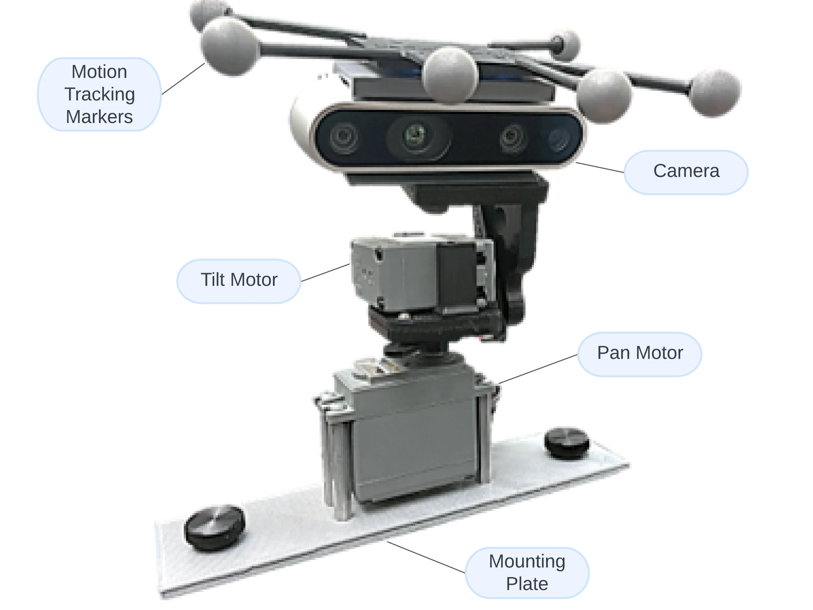
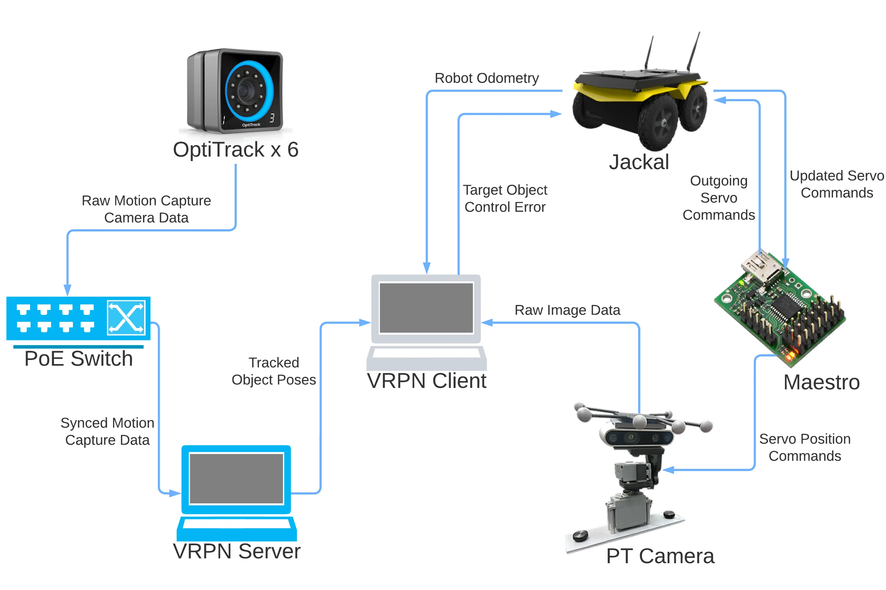
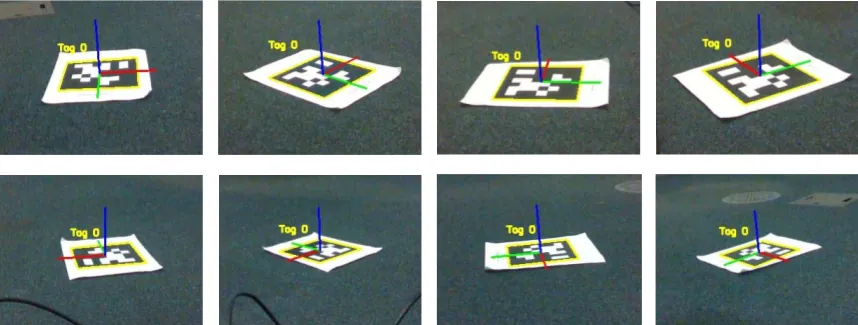
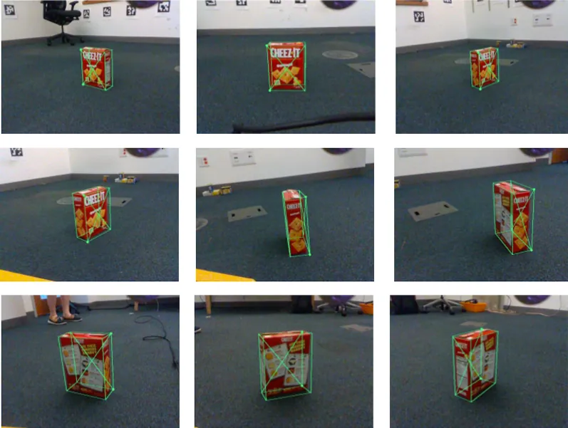
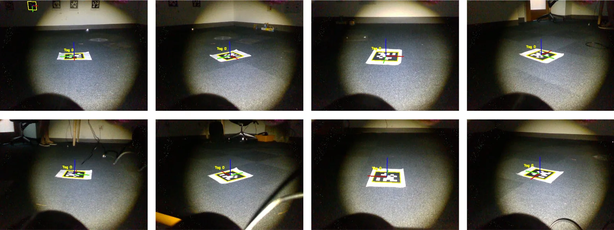
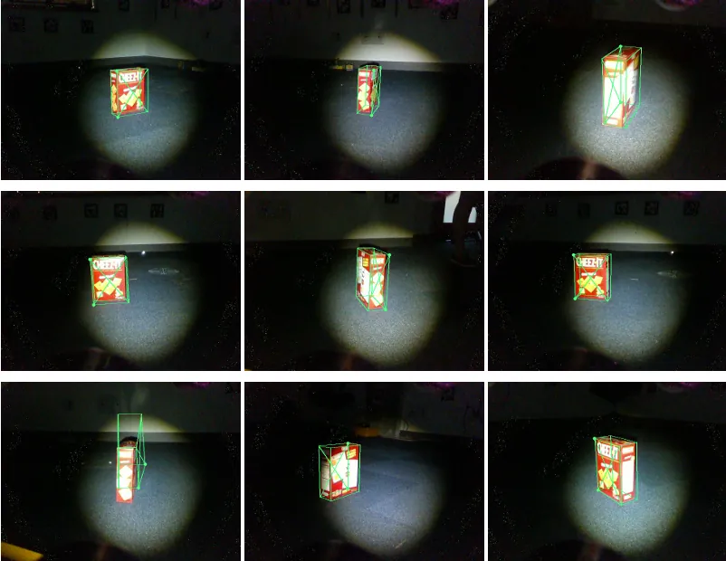
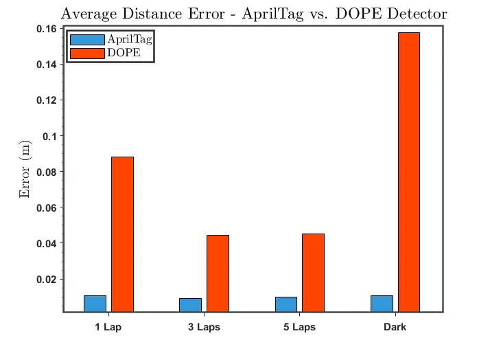
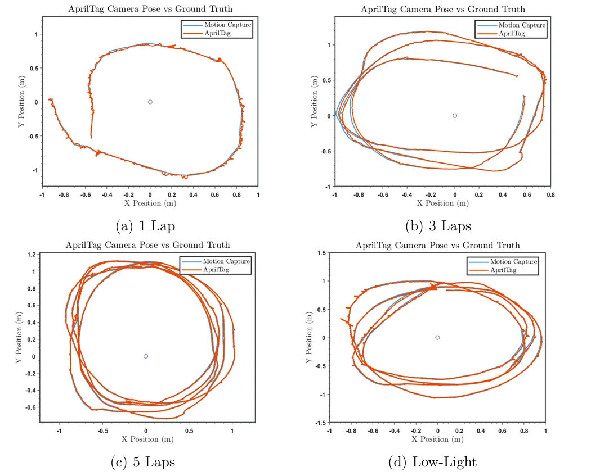
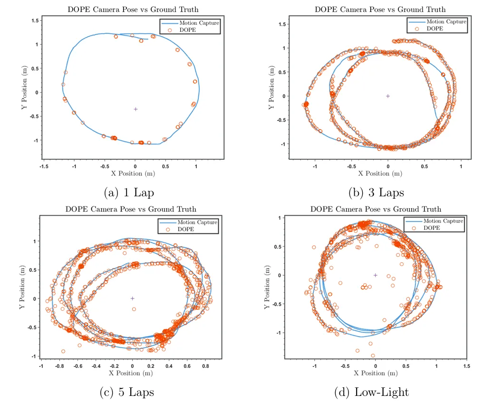
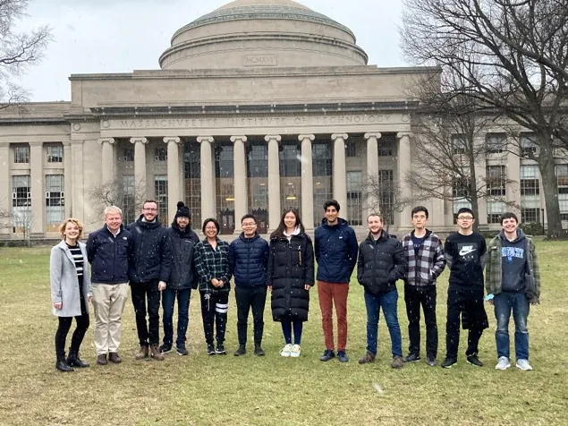

Active Object-Based Robot Navigation
Master's Thesis | MIT Computer Science & Artificial Intelligence Laboratory (CSAIL) under Prof. John Leonard | 2022
Overview
I designed and implemented an active vision system that enables a mobile robot to localize using real-world objects instead of artificial fiducial markers. The platform actively steers an RGB-D camera to maintain optimal viewpoints for real-time 6-DOF object pose estimation, improving the quality of object-based navigation experiments.

What I Built
- Designed and assembled a modular active-vision robotic platform on a Clearpath Jackal UGV
- Implemented position-based visual servoing on a custom pan-tilt camera system
- Integrated Intel RealSense RGB-D sensing, ROS, and motion capture for end-to-end evaluation
- Implemented real-time camera control that continuously tracks target objects during robot motion
- Built the software pipeline connecting object detection, pose estimation, control, and localization into a single experimental platform

Key Contributions
- Demonstrated continuous object tracking while a robot circumnavigated stationary targets
- Quantitatively compared classical fiducial localization (AprilTags) with learning-based object pose estimation (NVIDIA DOPE)
- Evaluated localization accuracy against motion-capture ground truth under both normal and low-light conditions
- Established a reusable research platform for future object-level SLAM and active perception experiments
- Mentored a high school student through mechanical assembly and data collection summer project
Network Architecture

Technical Stack
Hardware
- Clearpath Jackal
- Intel RealSense D435
- Micro Maestro Servo Controller
- OptiTrack Motion Capture
Software
- ROS
- Python
- OpenCV
- MATLAB
Algorithms
- Position-Based Visual Servoing
- PD control
- Fiducial Marker Detection
- NVIDIA Deep Objct Pose Estimation (DOPE)
Normal Lighting Conditions
AprilTags

DOPE-Trained Objects

Low Light Conditions



Results
- Successfully maintained target objects within the camera's field of view throughout navigation experiments
- AprilTag-based localization remained robust even in low-light conditions
- DOPE enabled semantic object localization without fiducial markers, but showed increased sensitivity to lighting and reflective surfaces, highlighting practical challenges for real-world object-based navigation


Acknowledgments

This thesis project was conducted as part of my master's research with MIT CSAIL's Marine Robotics Group under the supervision and guidance of Prof. John Leonard. I also recieved invaluable technical support from MIT instructor, Steve Banzaert as well as fellow labmates Kevin Doherty and Kurran Singh. I had valuable lab assistance from student and mentee Pablo Hu on the mechanical assembly of the pan-tilt camera system.